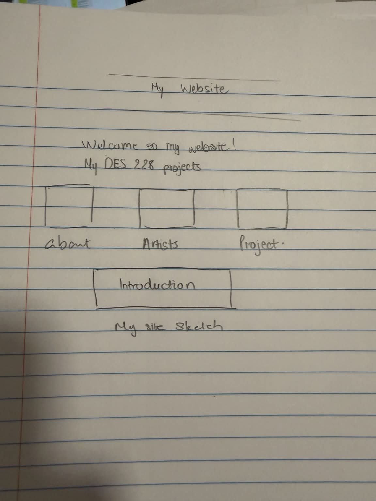

Welcome to my website! This site includes the projects I have created for DES 228.
Hi! My name is Thanh Thao Nguyen. Welcome to my DES 228 website. This website includes my class projects and exercises.

One idea I applied from the reading is that navigation should help users find information and move through a website easily. I interpreted this idea as making my navigation simple and giving each link a clear name. On my entry page, I created links for Home, About, Artists, and Project. I used these names because they tell visitors what they can expect to find instead of using unclear names such as “Page 1” or “Page 2.” This makes it easier for visitors to understand where each link will take them.I also thought about the information architecture of my website while organizing the entry page. I made a simple sketch to show the layout and how the main page connects to my other pages. I decided that visitors should first see the website title and a short introduction, followed by the navigation and content. Creating the sketch also helped me think more clearly about the relationship between the different pages. Right now, my website is still small, so I kept the navigation simple. If I add more projects and pages later, I may need to group similar content together and change the navigation so the website stays organized and easy to use.